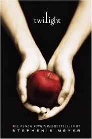

Once Upon a Time
Twilight
(Twilight #1)

Twilight
Twilight
by Stephanie Meyer
Review
About three things I was absolutely positive.
First, Edward was a vampire.
Second, there was a part of him - and I didn't know how dominant
that part might be - that thirsted for my blood.
And third, I was unconditionally and irrevocably in love with him.
In the first book of the Twlilight Saga, internationally bestselling
author Stephenie Meyer introduces Bella Swan and Edward Cullen, a pair of
star-crossed lovers whose forbidden relationship ripens against the
backdrop of small-town suspicion and a mysterious coven of vampires. This is a love story with bite.